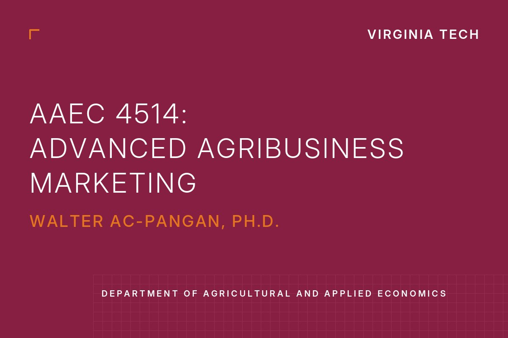
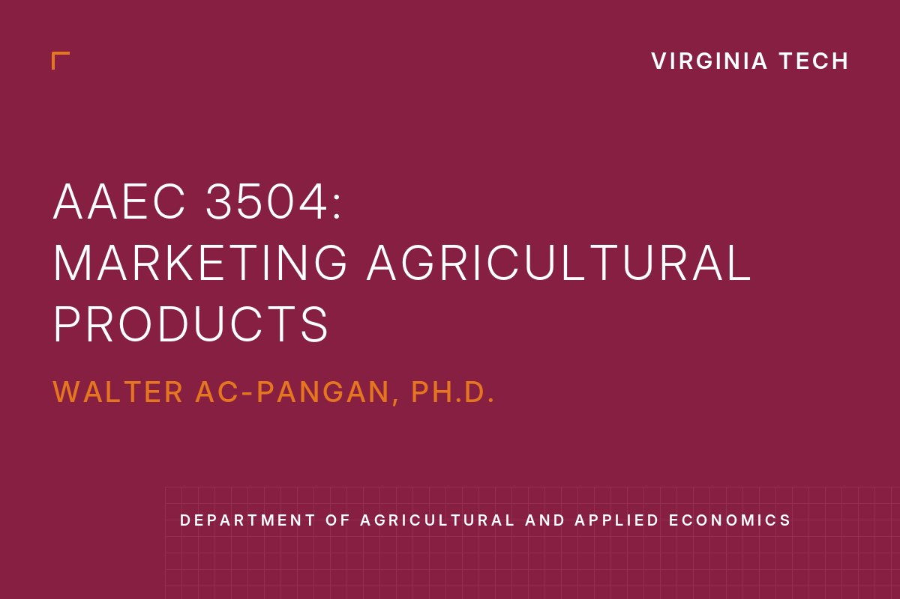
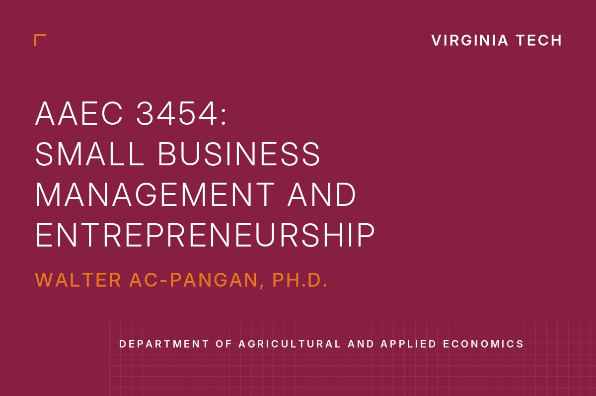
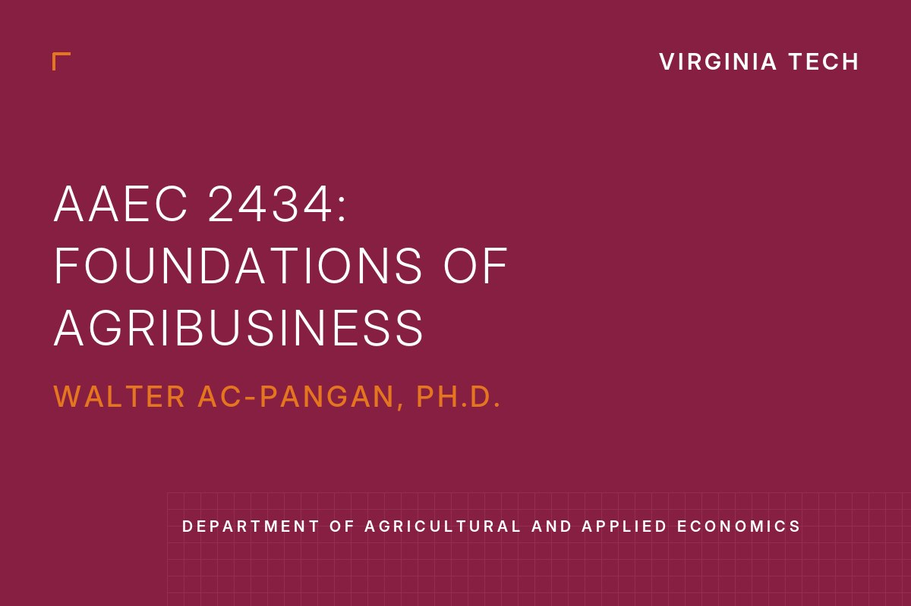
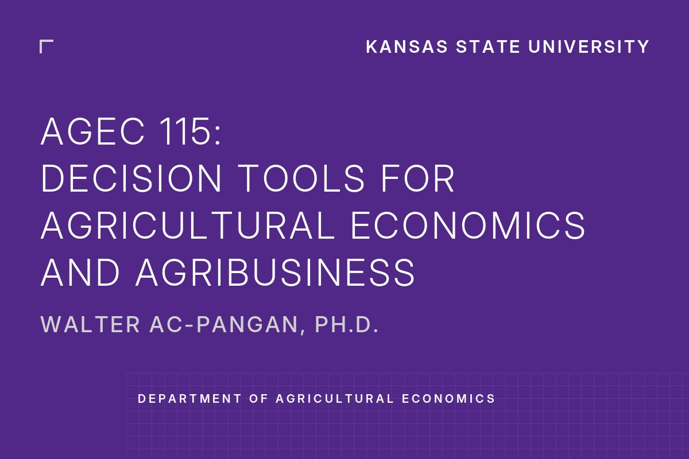
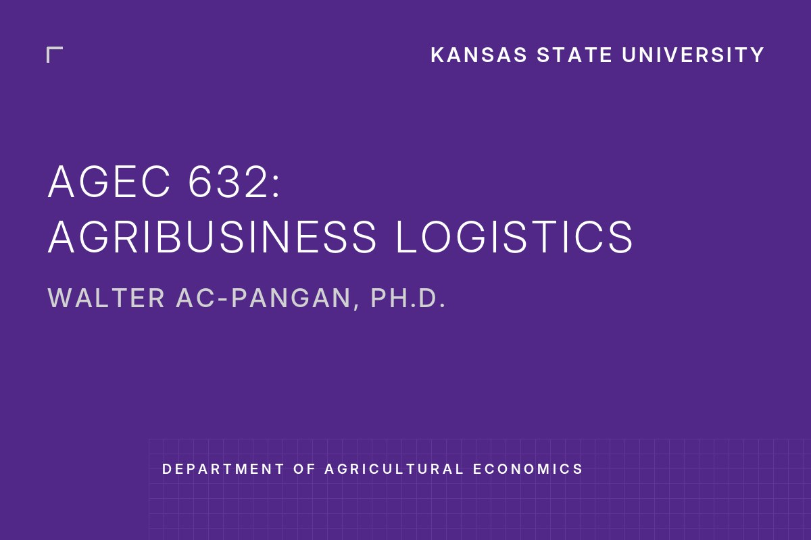

Welcome! I am an agricultural economist working at the intersection of forecasting, agribusiness, and trade policy. I build forecasting models with machine learning, remote sensing, and econometrics, and I have studied supply chains for corn, soybeans, rice, cocoa, beef cattle, and citrus in the United States and Latin America.
This paper develops machine learning models that produce in-season forecasts of U.S. corn planted acreage at the county and state levels, designed to complement the USDA's World Agricultural Supply and Demand Estimates (WASDE). The models are trained on publicly available in-season information, using a panel of 95 variables covering weather, market and field conditions, and historical acreage, yields, and production for 35 states (about 98% of U.S. corn production) from 1990 to 2024. Machine learning substantially improves predictive accuracy, and "days suitable for fieldwork" emerges as the strongest predictor across models. Incorporating survey-based planting intentions improves accuracy by 30–48%, showing that farmer survey data carries information that modeling complexity alone cannot replace. The framework provides acreage forecasts in months when the USDA does not release updated estimates.
Effects of Non-Tariff Trade Barriers in Grain Markets: The Case of the Rice Export Ban Imposed by India
with Nathan P. Hendricks
Working paperGravity model · Event study · Rice trade
Summary
This paper uses a gravity model within an event-study framework to estimate how India's rice export ban affected global trade flows, identifying the effects of non-tariff barriers on grain markets.
Identifying Gaps in Food Manufacturing Business: Local Drivers and Impediments for Small Agri-Food Businesses
with P. Sharma, J. Kim, H. Peterson, A. Shanoyan, and J. Yu
Revised and resubmitted, Applied Economic Perspectives and Policy
Summary
This project investigates the factors driving the establishment of new local food manufacturing businesses in the Heartland region of the United States. Discrepancies between the predicted and actual number of businesses provide insights for policymakers to prioritize resource allocation and support economic development in under-resourced counties.
A Unified Algorithm for Penalized Likelihoods in Model Selection of Spatial-Temporal Models for Lattice Data
with F. Jo, P. Reyes, and N.P. Hendricks
Submitted, Journal of the Royal Statistical SocietyCounty corn yields · Weather · Soils
Summary
This project investigates the spatial dependence structure of county-level data using corn yields, weather, and soil characteristics, evaluating how environmental factors influence crop production while accounting for spatial correlation.
Work in progress
In-Season Forecasting of Corn Yields Using Remote Sensing Data
with M. Ortez, Y. Zhang, and M. Cary
In progressRemote sensing · Weather
Basis Prediction Error in Live Cattle Markets Using Machine Learning
with Brian K. Coffey
In progressLive cattle · Hedging
Cocoa Commodity Market Analysis: Supply, Marketing, and Price Discovery Mechanisms
Solo authored
In progressCocoa · Price discovery
Publications
Forecasting Grain Supply of Low and Middle-Income Countries
with N.P. Hendricks, Y.A. Zereyesus, and J. Kee · Agricultural and Resource Economics Review, 2026
This paper evaluates econometric and machine learning forecasting techniques through out-of-sample forecasting, using production data for corn, soybeans, wheat, sorghum, and rice together with price and weather data from 78 countries. The proposed methodology improves the accuracy of the forecasting model used in the USDA Economic Research Service's annual International Food Security Assessment.
Special Article: Projecting Long-Term Staple Grain Production for the International Food Security Assessment: A Time Series Cross-Validation Approach
with Y.A. Zereyesus, J. Kee, N.P. Hendricks, L. Cardell, N.J. Nava, J. Jellife, and S. Morgan · USDA ERS, International Food Security Assessment, 2023–2033, 2023
Project-based course: student teams build a strategic marketing plan for an agri-food product or service. 45 students.
Course Details

Course Description
A project-based course that emphasizes applying concepts, principles, and analytical tools to develop strategic marketing plans for existing or new agri-food products and services. Students work in teams to identify target markets, conduct competitive market analyses, outline assumptions and objectives, and design comprehensive marketing strategies tailored to the agri-food sector.
Economics of agricultural marketing channels, market structure, contracts, vertical integration, and market power. 80 students.
Course Details

Course Description
Focuses on the economics of the U.S. and Virginia agricultural and food marketing systems. The course examines agricultural commodity marketing channels from the farm gate to the consumer’s plate, and how prices, consumer preferences, government regulations, and international competition shape them. Topics include consumer responses to food prices; the structure of processors, wholesalers, retailers, and food service providers; alternative marketing outlets; and contracts, vertical integration, market power, and antitrust behavior.
AAEC 3454 — Small Business Management and EntrepreneurshipInstructor · Virginia Tech · 2026
Early-stage venture creation in agriculture: opportunity assessment, feasibility analysis, and business concepts. 52 students.
Course Details

Course Description
Develops students’ entrepreneurial mindset with a focus on early-stage venture creation in the agricultural sector. Students learn to assess entrepreneurial opportunities, generate and evaluate business ideas through feasibility analysis, and develop and communicate viable business concepts, building the skills needed to identify opportunities, mobilize resources, and launch new ventures.
AAEC 2434 — Foundations of AgribusinessInstructor · Virginia Tech · 2026
Introduction to agribusiness through new ventures and established operations, with a semester-long team project. 58 students.
Course Details

Course Description
Introduces students to the agricultural and food industries through the perspectives of new venture creation and the management of established agribusiness operations. Students explore fundamental economic, financial, and management concepts and tools, including financial statement analysis, budgeting, and risk management, applied through a semester-long team project.
AGEC 115 — Decision Tools for Agricultural Economics and AgribusinessInstructor · Kansas State · 2024
Excel-based analytical skills for business and economic problems in food and agriculture. 20 students.
Course Details

Course Description
Develops computer-based analytical skills to address economic and business challenges in the food and agriculture sectors. Students use Microsoft Excel to analyze real-world problems in agribusiness, finance, and data processing, including data visualization, data cleansing, cell references and functions, and logical formulas.
AGEC 632 — Agribusiness LogisticsInstructor · Kansas State · 2021
Supply chain and logistics in agrifood systems: transportation, storage, processing, and inventory. 22 students.
Course Details

Course Description
Examines supply chain and logistics management from a practical perspective, emphasizing how effective materials management provides a significant competitive advantage. Students learn to plan for the efficient and resilient use of transportation, storage, and processing facilities in handling raw materials and products within agribusiness firms.
R Programming Camp for incoming M.S. and Ph.D. studentsInstructor · Kansas State · 2023, 2024
Hands-on introduction to programming for data analysis in agricultural economics. 10 and 14 graduate students.
Course Details
Course Description
A short, hands-on camp that prepares incoming M.S. and Ph.D. students for the quantitative work of graduate school. The R Notes for AGECON walk through R and RStudio step by step: variables and data types, vectors, matrices, and data frames, importing and exporting data, data wrangling, graphs and maps, and regression tables. Companion notes cover the same topics in Python, SAS, and Stata, together with programming fundamentals such as loops, functions, and simulated economics examples, so students can work in the software their program or employer uses.